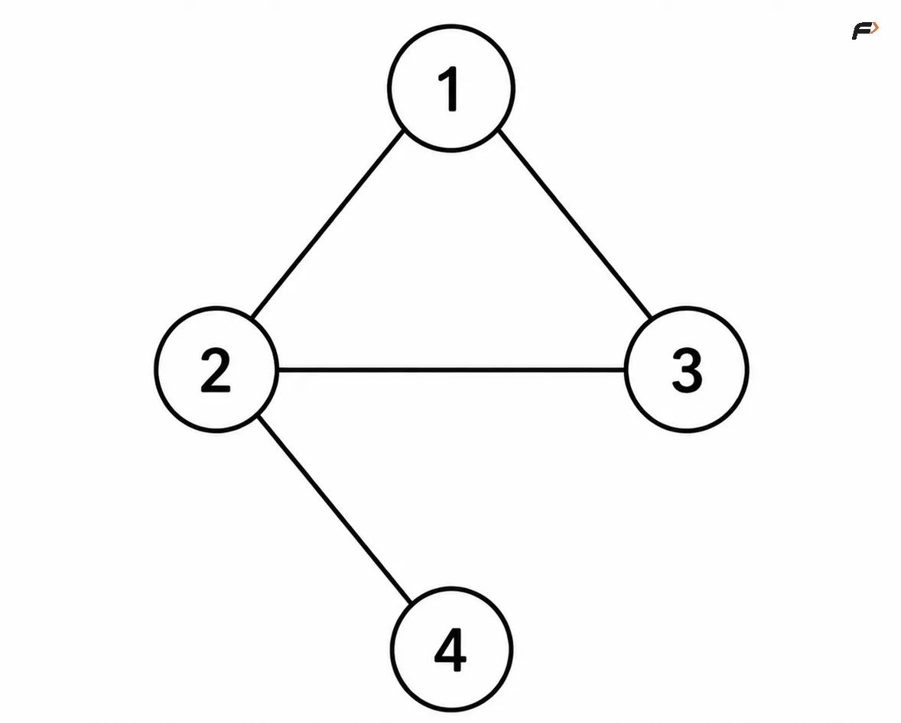
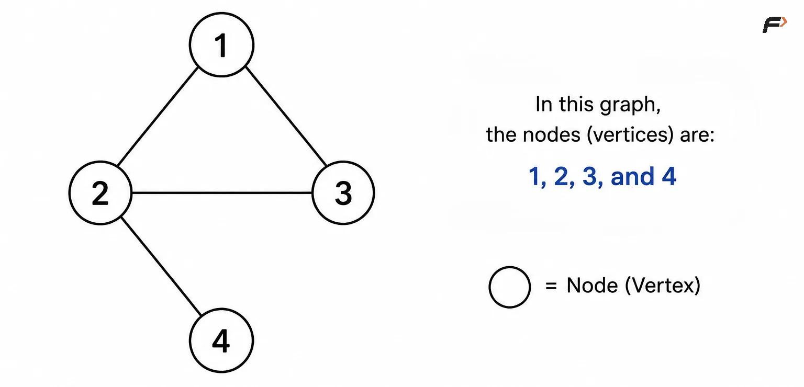
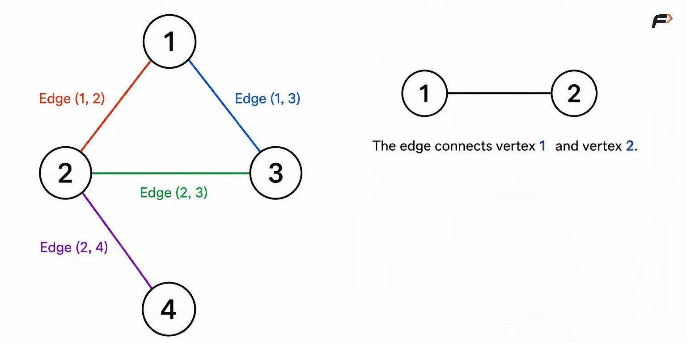
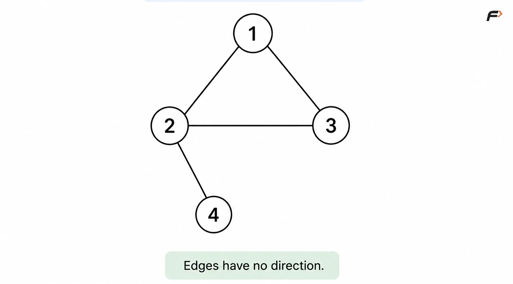
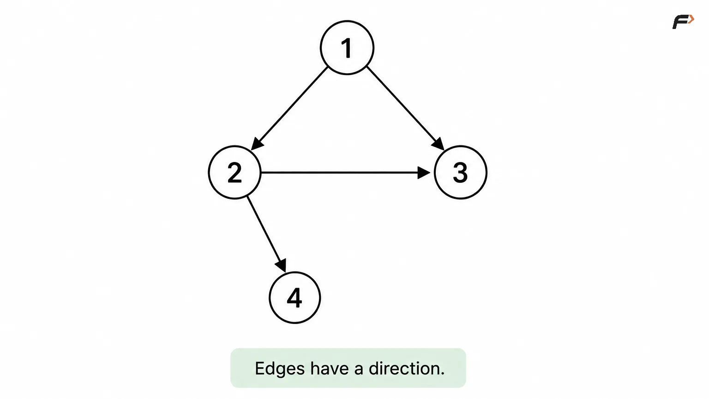
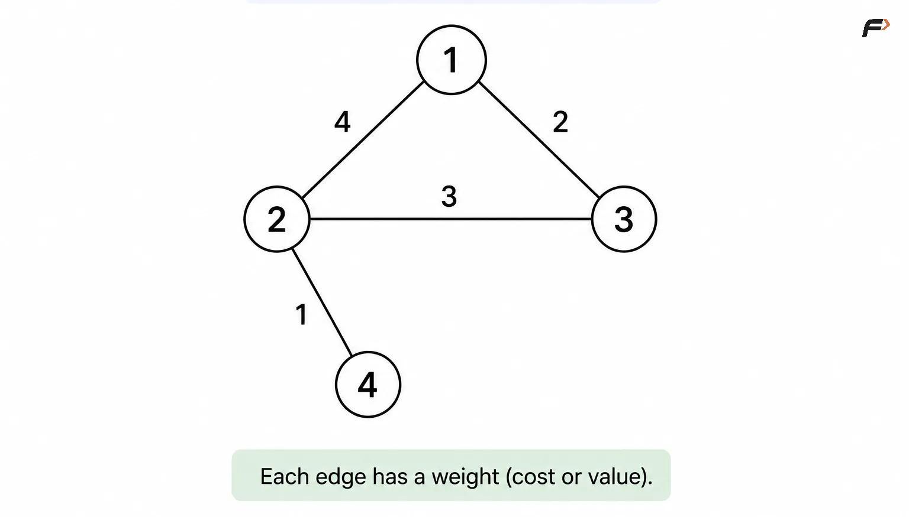
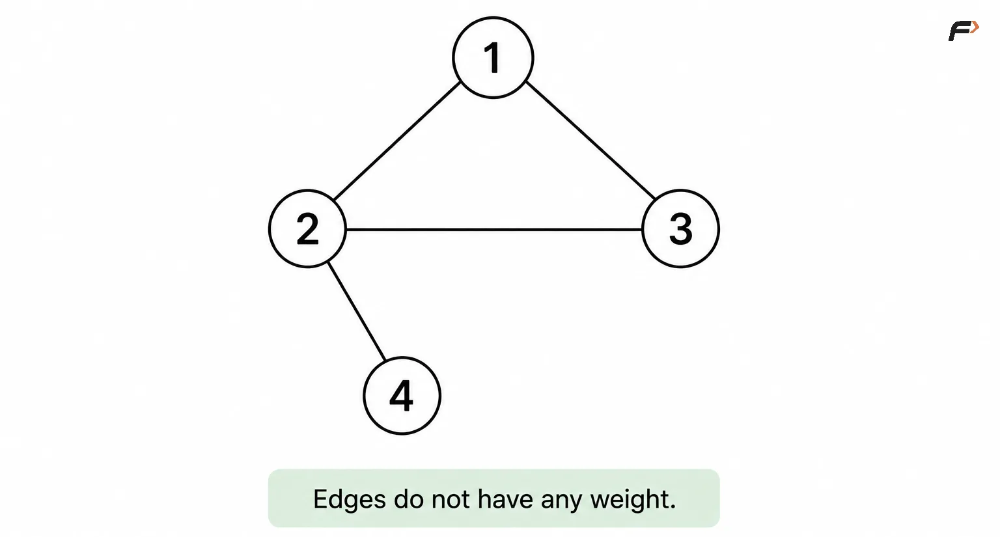

Introduction to Graph
Introduction to Graph
A Graph is a non-linear data structure used to represent relationships or connections between different entities. A graph consists of vertices (nodes) and edges, where vertices represent entities and edges represent the relationships between them.
For example, in a social network, people can be represented as vertices and friendships between them can be represented as edges.
A simple graph can be represented as:

graph
Here, 1, 2, 3, and 4 are vertices, while the lines connecting them represent edges.
Graphs are useful whenever the relationship between objects is as important as the objects themselves.
Why Are Graphs Used?
Many real-world problems involve objects that are connected to one another. Graphs provide a natural way to model these relationships.
For example:
Social networks - users are vertices and friendships or follows are edges.
Maps and navigation - locations are vertices and roads are edges.
Computer networks - devices are vertices and communication links are edges.
Web pages - pages are vertices and hyperlinks are directed edges.
Flight networks - airports are vertices and flights are edges.
Course prerequisites - courses are vertices and prerequisite relationships are directed edges.
Recommendation systems - users and products can be represented as connected entities.
Dependency management - tasks or packages can be connected through dependency relationships.
The main advantage of a graph is that it allows us to model relationships between multiple entities rather than storing elements independently.
Basic Terminology of a Graph
Before working with graph algorithms, it is important to understand the common terms used to describe graphs.
Vertex
A vertex, also called a node, represents an individual entity in a graph.
For example:

vertices
Here, 1, 2, 3, and 4 are four vertices.
If a graph contains V vertices, they are commonly numbered from: 0 to V - 1
Edge
An edge represents a connection between two vertices.
For example:

edges
The edge connects vertex 1 and vertex 2.
In an undirected graph, the edge can be written as: (1, 2) because the connection works in both directions.
Adjacent Vertices
Two vertices are called adjacent if there is an edge directly connecting them.
Vertices 1 and 2 are adjacent because an edge exists between them.
Degree of a Vertex
The degree of a vertex in an undirected graph is the number of edges connected to that vertex.
Vertex 2 has three connected edges, so: degree(2) = 3
The degree of a vertex is useful in problems involving connectivity, traversal, and graph properties.
Types of Graphs
Graphs can be classified based on how their edges behave.
Undirected Graph
In an undirected graph, an edge represents a two-way connection.

undirected
1 is connected to 2, then 2 is also connected to 1.
Examples include:
Friendship relationships
Two-way roads
Network connections
Directed Graph
In a directed graph, every edge has a specific direction.

directed
This means we can move from 1 to 2, but the edge does not automatically allow movement from 2 to 1.
A directed edge can be represented as: 1 → 2
Examples include:
Following relationships on social media
One-way roads
Web page links
Weighted Graph
In a weighted graph, every edge has an associated value called a weight.

weighted
Here, the edge between 1 and 2 has weight 4.
The weight can represent different quantities depending on the problem.
For example, a road network can use the distance between two cities as the edge weight.
Unweighted Graph
In an unweighted graph, edges do not have associated weights.

unweighted
The graph only represents whether a connection exists.
Unweighted graphs are commonly used when the relationship itself matters but there is no additional cost or distance associated with the connection.
Why Is Graph Important in DSA?
Graphs are important because many algorithmic problems can be expressed as relationships between objects.
Once a problem can be represented as:
Entities → Vertices
Relationships → Edgesgraph algorithms can be applied to solve it. For example:
Cities → Vertices
Roads → EdgesA problem asking for the shortest route between two cities can then be transformed into a graph problem. Similarly:
Courses → Vertices
Prerequisites → Directed Edgescan be used to identify valid course ordering or detect circular dependencies.
This makes graphs one of the most important data structures for solving relationship-based problems.
Interview follow-up Questions
A vertex represents an entity, while an edge represents the connection or relationship between two vertices.